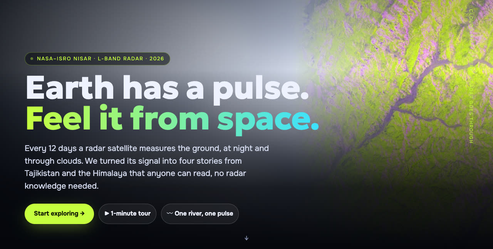
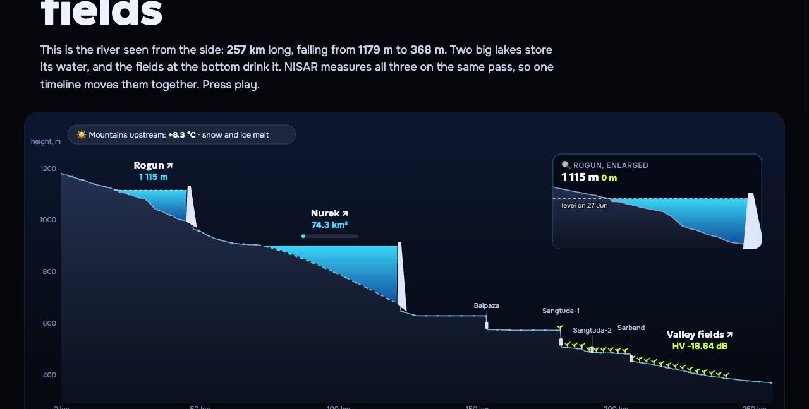
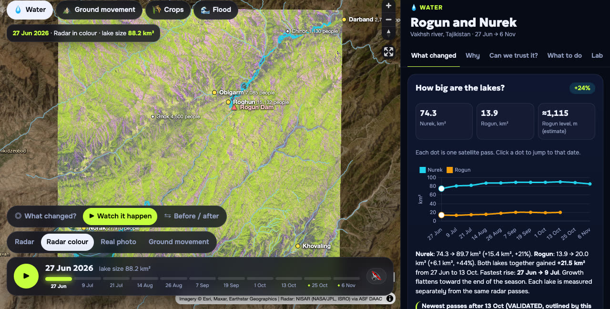
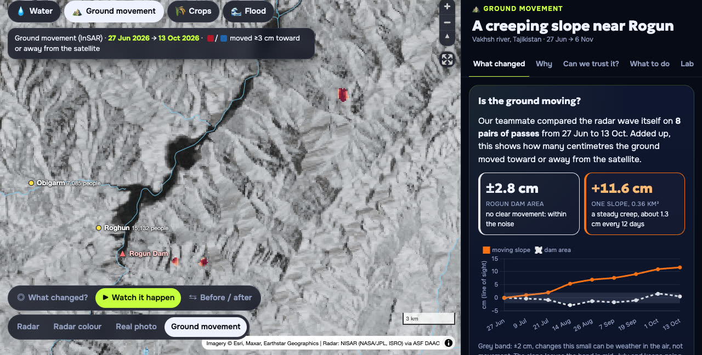
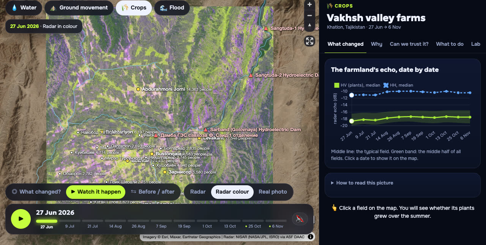
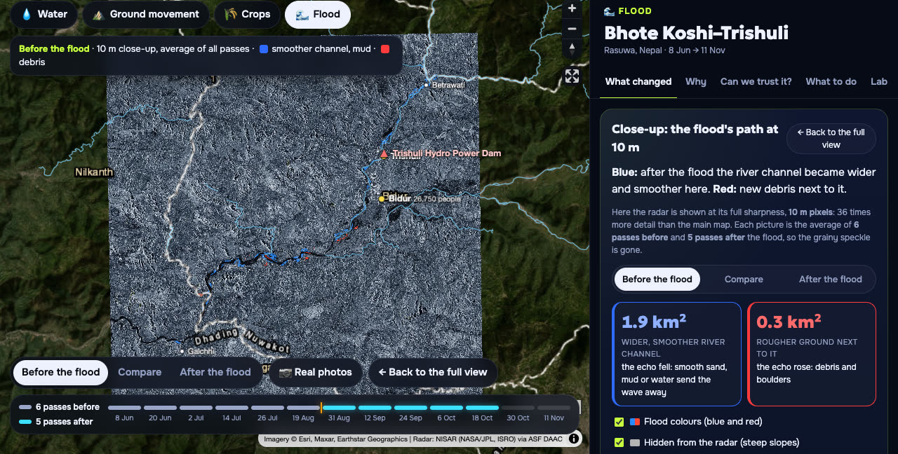

NASA Space Apps Challenge 2026 · Challenge: Dancing with the SARs
Radar from space, turned into a story anyone can read: what changed, where and why.
Team CIFARSOFT · Tajikistan · Live app: ismoil3.github.io/nisar-surface-pulse
The problem and our idea

Our signature view
The Vakhsh river seen from the side, 257 km from the mountains to the cotton fields.
River line: OpenStreetMap. Heights: Copernicus DEM. Lakes and fields: NISAR.

Four kinds of surface change, measured




How it works
Scientific validity
Impact and next steps
Next: new passes added automatically, more rivers of Central Asia, confirmation of the slope from a second orbit.
Live: ismoil3.github.io/nisar-surface-pulse
Code: github.com/ismoil3/nisar-surface-pulse (MIT)
We used Claude (Anthropic) as a coding and writing assistant. No data, measurement or picture was generated by AI: every number comes from NASA and partner data through scripts in the repository.